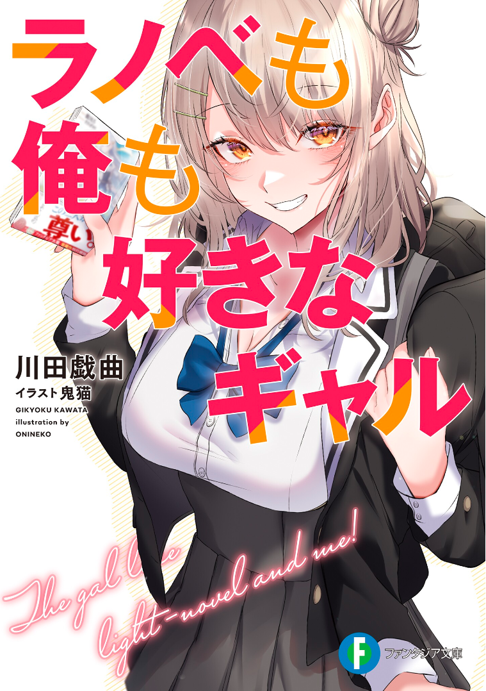

Ranobe Mo Ore Mo Sukina Gyaru
Novel Info's
Status: Ongoing
Genre: Comedy, Romance, Seinen
Author: 川田戯曲
Illustrator: 鬼猫
Volumes: 1
Original Publisher: Kadokawa Sneaker Bunko
English Publisher: N/A
Fan Translation: Hiraeth Translation
Description/Sypnosis
Ryosuke Yoda is a male high school student who loves light novels and sometimes tries to find light novels recommendation on SNS.
But when he participated in an offline meet-up with a light novel reader he had known for a long time on SNS——the one who came was the popular gal in his class, Miona Tsumakawa!
On top of that, she suddenly confessed to him!?
Ryosuke Yoda’s ordinary youth takes on a new color as he forms a relationship with Miona Tsumakawa through their shared love of light novels.
Download Links
Epub & Pdf